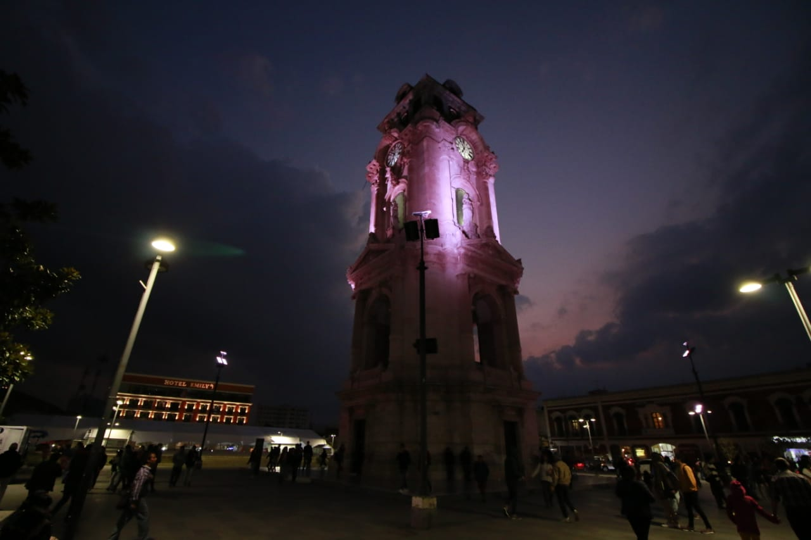

Big Idea
Sin voto no hay dinero, fue una propuesta del ex diputado Pedro Kumamoto, el principio de la ley es que el financiamiento que se les otorgue a los partidos en los años electorales dependa del número de personas que convenzan para votar.
Este es un dashboard basado en las elecciones para gobernador del estado de Hidalgo del año 2016, que pretende visualizar por medio de un mapa y gráficas de apoyo como distribuye el presupuesto y cómo se podría distribuir con esta nueva ley.